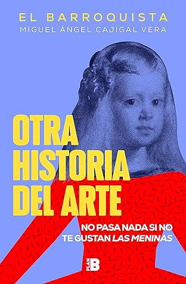

Otra historia del arte: No pasa nada si no te gustan Las Meninas
Reseña por Jorge I. Zuluaga

Ver reseña en GoodReads (necesita cuenta)
Una aproximación novedosa a la historia del arte, fresca, bien escrita y muy a tono con los tiempos que vivimos.
Es normal que de un tema como este se encuentre uno libros, incluso de naturaleza divulgativa, que o bien son muy académicos o se reducen a una colección de láminas con descripciones relativamente superficiales —o demasiado detalladas— destinadas a turistas de museo.
Debo reconocer que "Otra historia del arte" es mi primer libro introductorio en el tema —aunque tengo otros esperándome en la biblioteca— y, la verdad, ¡me ha encantado! Logró en mí lo que debe lograr una buena obra divulgativa: ahora quiero saber más, leer otras obras, incluso obras más académicas sobre historia del arte. También ha operado en mí una transformación en la manera en la que creo que apreciaré en lo sucesivo el arte, ya sea en museos, en libros o simplemente en internet. Sé que parecen demasiadas cosas para un simple texto divulgativo, pero a veces solo se necesita eso: un empujoncito.
El libro se organiza en dos partes.
En la primera parte, Miguel Ángel presenta una serie de ensayos cortos, escritos con una buena dosis de humor e ironía, en los que nos presenta una visión propia y, en algunos, muy original, de temas clave de la historia del arte: ¿son los cánones buenos en el arte? ¿no han exagerado demasiado los biógrafos de los grandes artistas al resaltar elementos de la historia personal para crear mitos humanos? ¿es el arte contemporáneo realmente el fin del arte o estamos en realidad viviendo una era de creación artística sin precedentes? ¿qué es una obra maestra y por qué parece haber tantas? ¿qué es el efecto Stendhal? ¿alguna vez te ha dado un soponcio presenciando una obra artística? ¿es el gran arte solo innovación o hay también grandes obras, creadoras y creadores que producen obras con estilos de otros tiempos?
En la segunda parte, la más extensa, el autor nos presenta una nueva aproximación a la historia del arte —de ahí el nombre del libro—, en la que, en lugar de un recorrido cronológico o estilístico por la historia de la creatividad humana —que es la aproximación usual—, Miguel Ángel nos lleva en un viaje de reconocimiento de algunos temas centrales: el arte y el contexto cultural en el que se crea, el arte como expresión de sentimientos, la representación de los animales, la representación de niñas y niños en el arte, el arte abstracto, la naturaleza muerta, entre otros.
¡Qué buen viaje es este libro!
Una cosa me gustó particularmente del trabajo de Miguel Ángel en "Otra historia del arte": su esfuerzo por escribir una historia del arte inclusiva, en la que se resaltan casi en la misma proporción las obras de grandes artistas masculinos, así como las de las innumerables maestras del arte que han quedado fuera del canon. Igualmente, se nota el esfuerzo por exponer ejemplos procedentes del arte que se produce en culturas diferentes a la europea. ¡Bien por eso! Yo sé que llamarlo un "esfuerzo" puede ser injusto con su autor; se nota a leguas que Miguel Ángel pertenece a la generación de académicos que ya han incorporado mentalmente la idea de que el 50 % de la humanidad ha sido excluida de la historia y de que existe un mundo de arte y cultura allende el Mediterráneo. Aun así, creo que no es fácil encontrar tantos ejemplos como los que son necesarios y le agradezco a Miguel Ángel por su dedicación. También me gustó el uso de lenguaje no sexista; aunque es inevitable que no todo el libro pueda gozar de esa característica, se nota también que en la cabeza del autor, como académico del arte, las mujeres existen.
El libro solo tiene un "defecto": le hacen falta como 200 páginas de láminas a color con las obras que ilustran los distintos ensayos que lo componen. En realidad, incluye 20 láminas al final, pero definitivamente no es suficiente. Si van a leerlo, prepárense a hacerlo al lado del navegador para que vayan buscando los artistas y las obras de las que habla Miguel Ángel. Les aseguro que la experiencia es completamente diferente.
Ahora bien, entiendo perfectamente que la edición actual no incluya todas estas imágenes. Conociendo los enredos que existen en el mundo creativo con los derechos de autor, estoy seguro de que si los editores hicieran un esfuerzo por agregar todas las posibles imágenes, terminarían con un monstruo de 1000 páginas que costaría 10 veces más. El resultado es que tal vez el libro no sería nunca publicado o quienes no podemos darnos el lujo de comprar grandes libros sobre arte, jamás lo habríamos leído.
Para quienes se vayan a animar a leerlo después de conocer esta reseña, he preparado en Twitter un hilo (vayan a este enlace para leerlo ahora mismo) con una colección más o menos exhaustiva de las obras pictóricas y escultóricas que se citan en el libro. Pueden leer el libro mientras navegan por el hilo. O pueden no hacerlo, pero ahí les queda el hilo con el que me divertí y aprendí mucho.